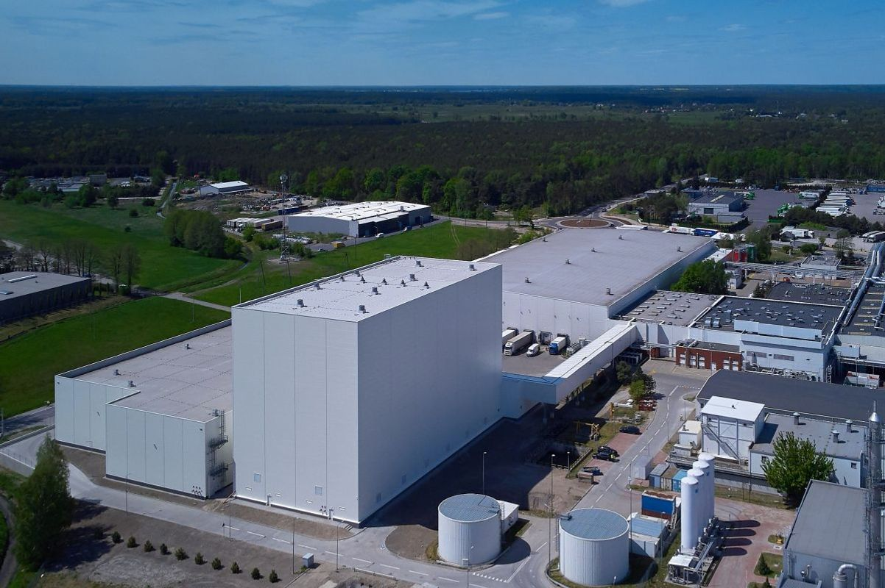

OTWARCIE NOWEJ FABRYKI WE WROCŁAWIU
15 Września, 2024

28 września 2022 r. odbyło się uroczyste otwarcie najnowszej inwestycji Coca-Cola HBC Polska – magazynu wysokiego składowania, który rozszerza możliwości operacyjne i logistyczne największego w Europie Środkowo-Wschodniej zakładu firmy. Inwestycja o wartości ponad 61 mln złotych zamyka dekadę, w której system Coca-Cola zainwestował w Polsce 1,3 miliarda złotych. Jej uroczyste otwarcie, z udziałem Pawła Szrota, Szefa Gabinetu Prezydenta RP, Ambasadora USA Marka Brzezinskiego oraz reprezentantów administracji rządowej i samorządowej, jest zwieńczeniem obchodów 50-lecia marki w Polsce, ale także wyznaczeniem kierunku rozwoju na kolejne lata.